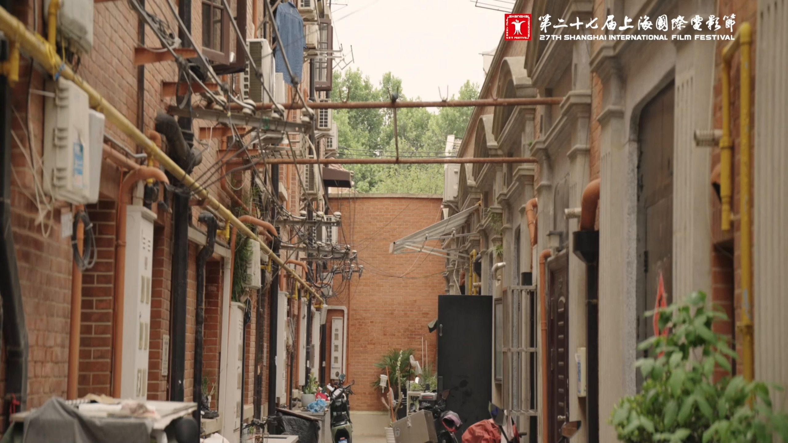

CINEMA OF OUR OWN
跟随
电影节
发生。
47线上电影节
3正在发生
38k参与记录

28
即将举办 · 征片进行中
上海国际电影节·
第28届 SIFF
254
人正在记录这届影展
载入中
—
载入中
—
更多影展
全部影展 →
黑泽明与日本新浪潮
89人正在参与
进入 →
上海华语独立短片展
203人正在参与
进入 →
她在路上·女性凝视电影周
156人正在参与
进入 →
电影节之外，电影仍在世界各地继续发生。
São Paulo
Toronto
Seoul
New York
Buenos Aires
Tokyo
Melbourne
Bangkok
Paris
Berlin
香港
HONG KONG
第一次在电影院看《悲情城市》，
散场后没人说话。
香港 · Kubrick
第一次在电影院看《悲情城市》，
散场后没人说话。
一条线索
城市，以及漂泊的人
The City and Its Shadow
"
这三部片放在一起，是因为它们都在问同一个问题：一个人独自在城市里，算不算失落？
策展人手记